文法解説動画
冠詞 Part 2
不可算名詞と可算名詞

文法解説動画
不可算名詞と可算名詞
a / an ＝
「1つの〜」
1初めて会話に出てきたとき
2一般的なものをさすとき

a dog
一般的な犬の話
それ！the dog
特定の犬の話
大切なのは、この2つ
数えられる名詞
可算名詞


数えられない名詞
不可算名詞


1つ、2つ、3つ…と数えられる名詞
book
one book
two books
apple
one apple
two apples
dog
one dog
two dogs
student

one student
two students
1つだけならa / an を使える： a book ／ an apple ／ a dog
ルール1つ、2つ…とそのまま数えられない → a / an はつけられない
不可算名詞には、よくあるパターンがある
液体
抽象的なもの
情報・概念
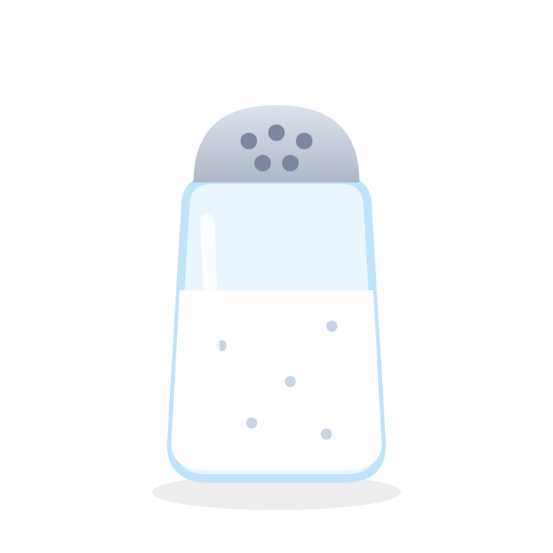
気体・粉末
粒状のもの
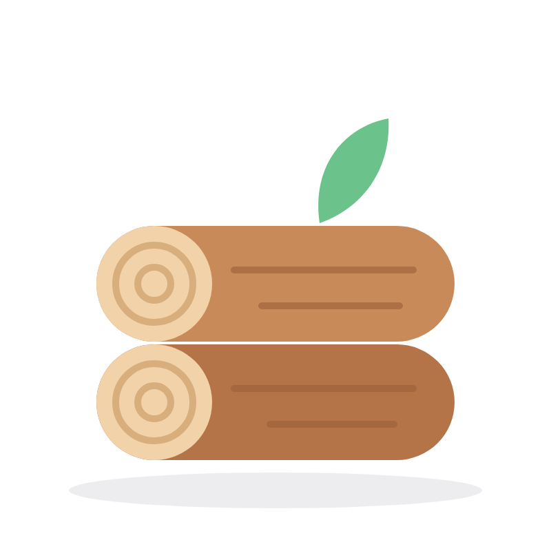
素材・材料
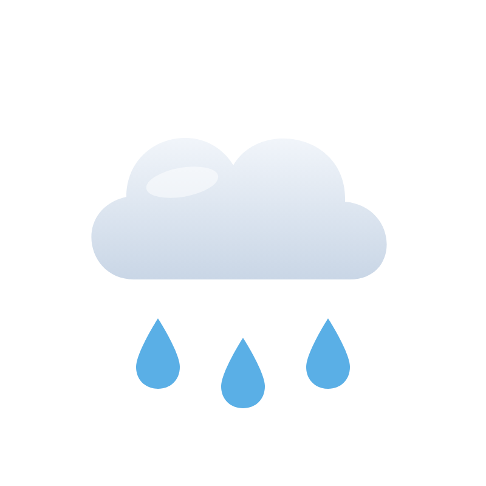
天候
自然現象
ポイント液体そのものは 1つ・2つと数えず、ひとまとまりとして扱う
water
水

coffee
コーヒー
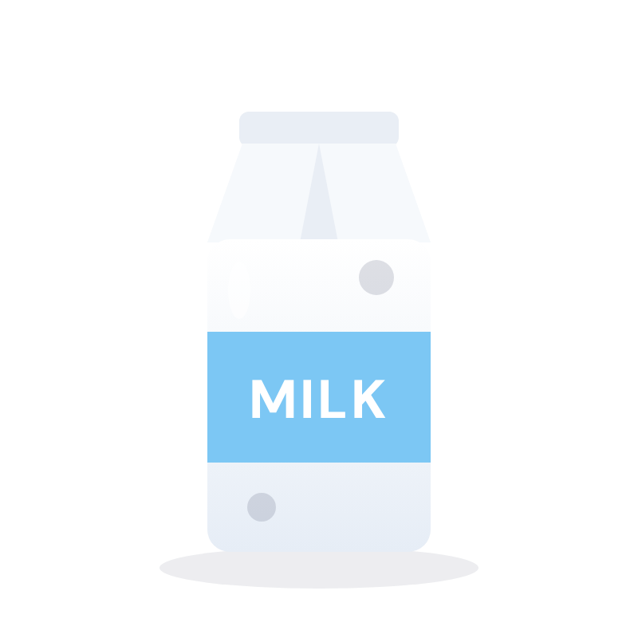
milk
牛乳
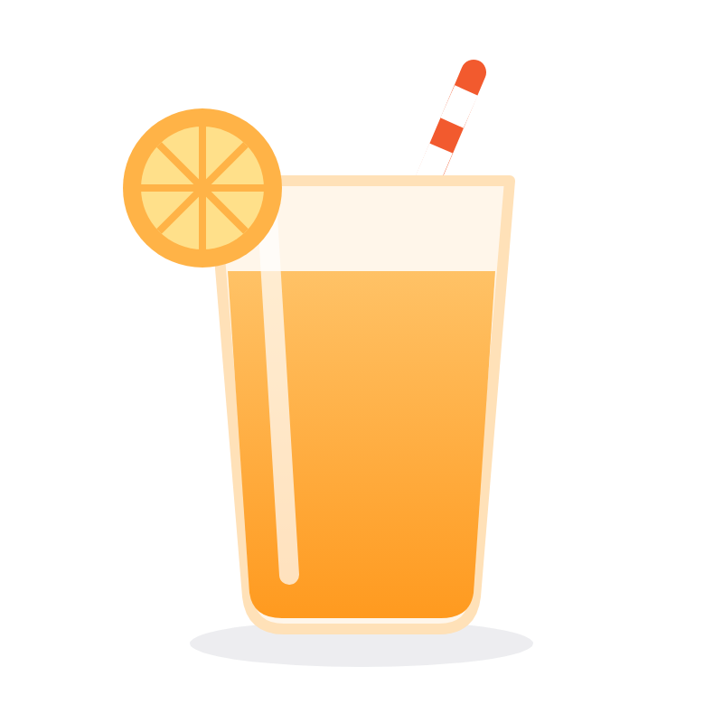
juice
ジュース
POINT
a coffee
コーヒー1杯
two coffees
コーヒー2杯
まとめ液体としての coffee は数えない ／ 「1杯」として数えるときは a coffee と言うことがある
ポイント形のある「1個」として区切りにくいもの

music
音楽

information
情報

advice
アドバイス

money
お金
love
愛
happiness
幸せ
POINT
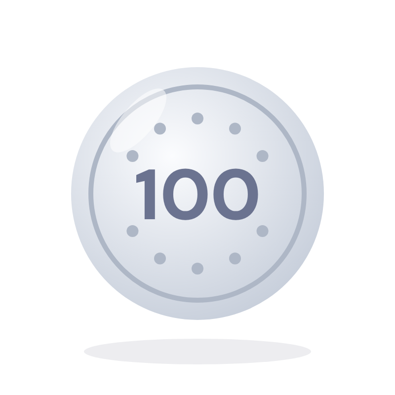
お金の「単位」は
数えられる
○one dollar
1ドル
○100 yen
100円
「お金」という概念は
数えられない
×a money
1つ、2つ…と数えられない
×two moneys
複数形にもしない
ポイント一つひとつの粒ではなく、全体をひとまとまりの物質として捉える
air
空気
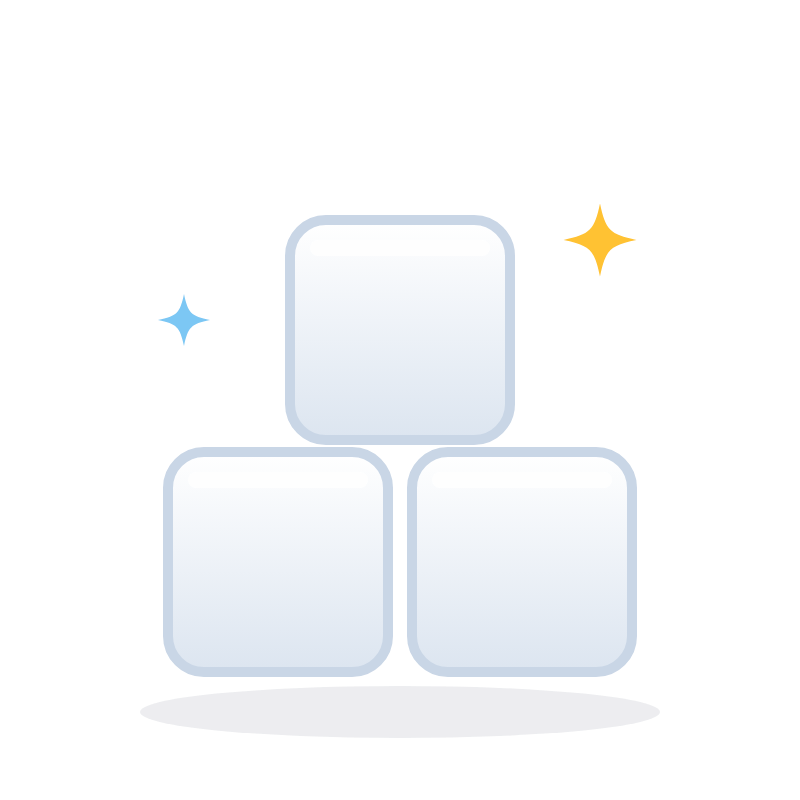
sugar
砂糖
salt
塩

rice
米・ごはん
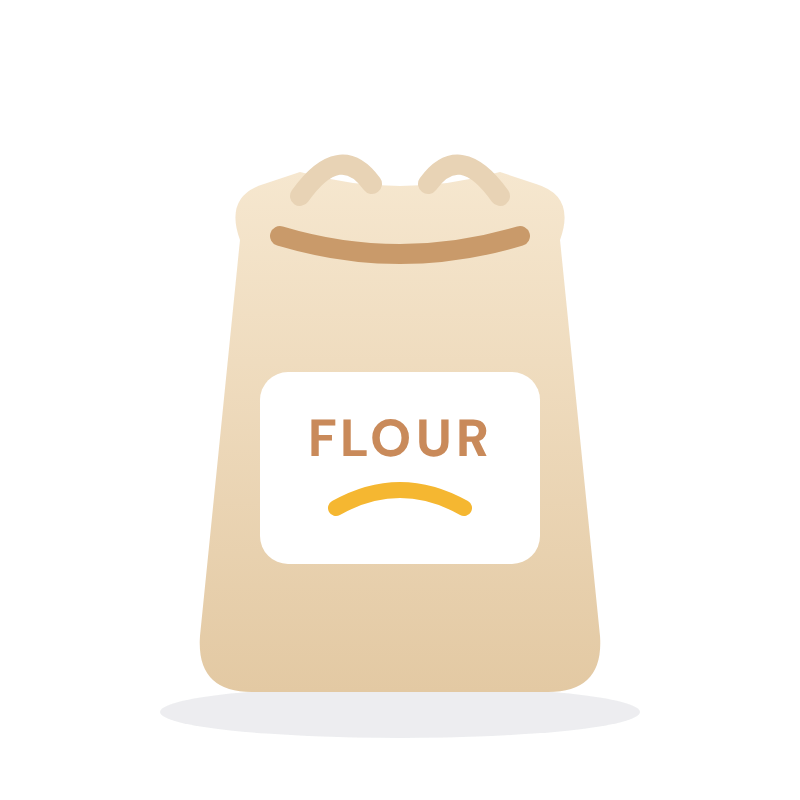
flour
小麦粉
注意rice は米粒を実際には数えられるけど、英語では「米というまとまり」として扱う
POINT
paper
紙・紙という素材
a paper
論文・新聞など
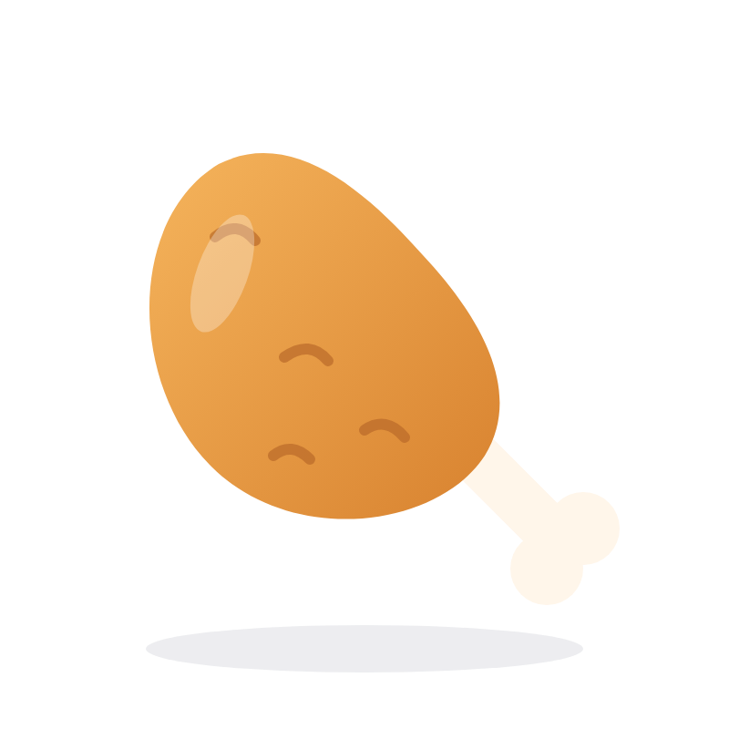
chicken
鶏肉

a chicken
1羽のニワトリ
ポイントこれらも、通常は不可算名詞
rain
雨
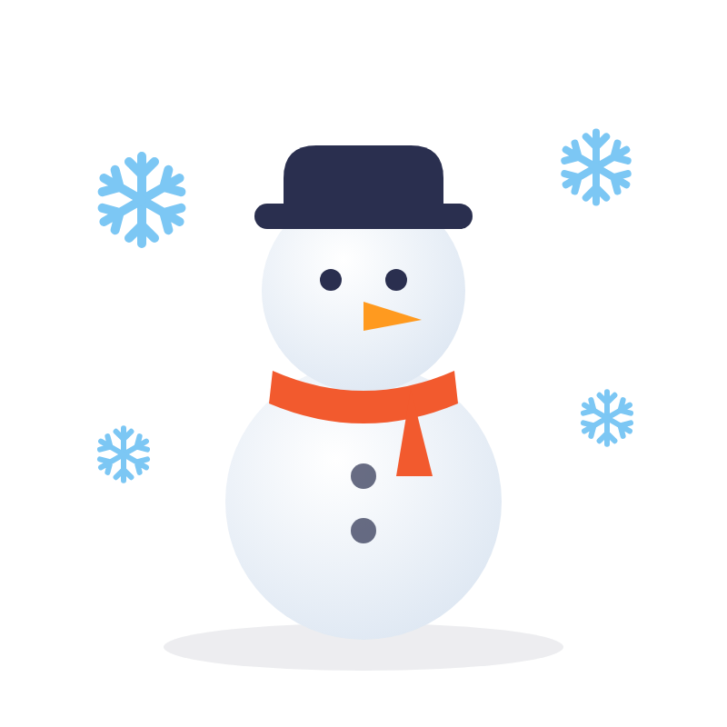
snow
雪
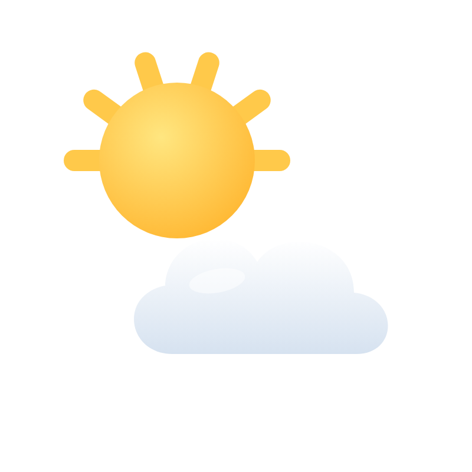
weather
天気

sunshine
日光・日差し
POINT
information
情報
×an information
○I have information.
私は情報を持っています。
○I have some information.
いくつか情報があります。
advice
アドバイス
×an advice
○He gave me advice.
彼は私にアドバイスをくれました。
○I gave him some advice.
私は彼にアドバイスをしました。